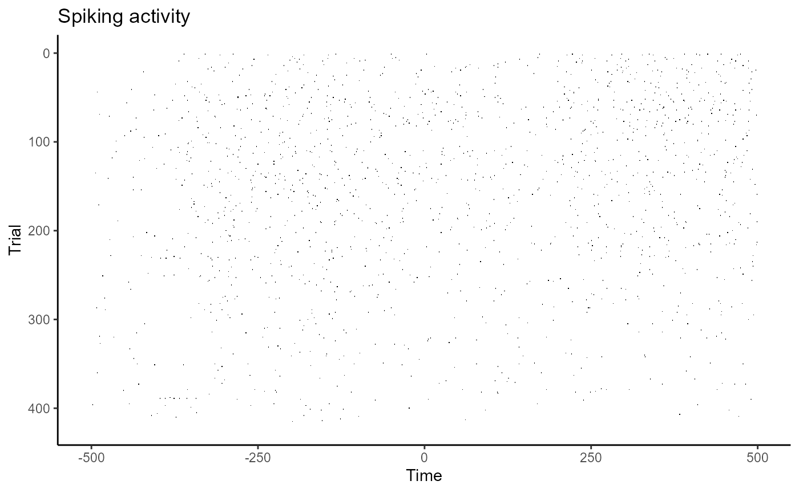
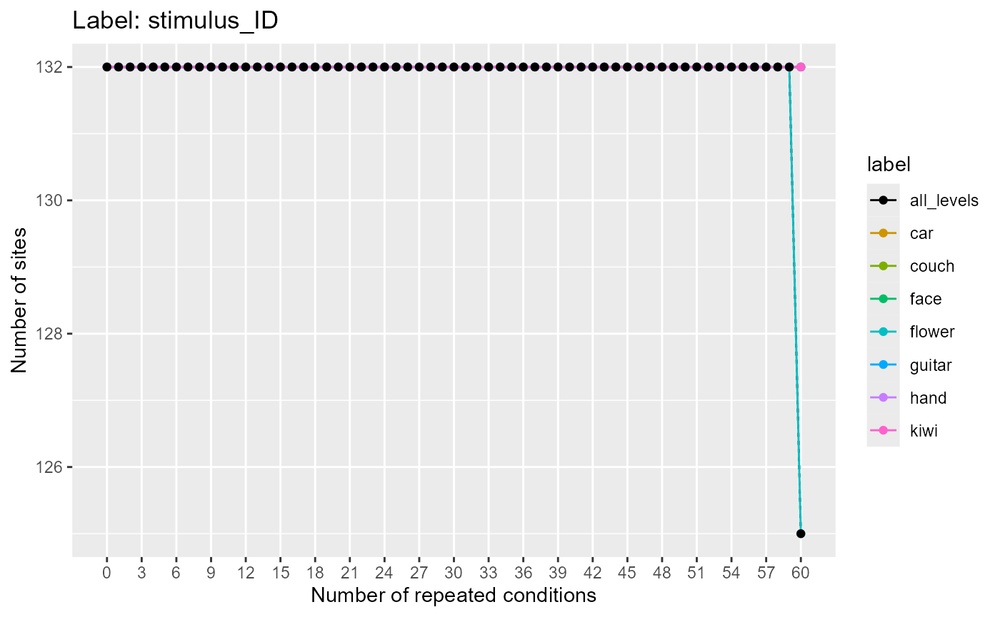
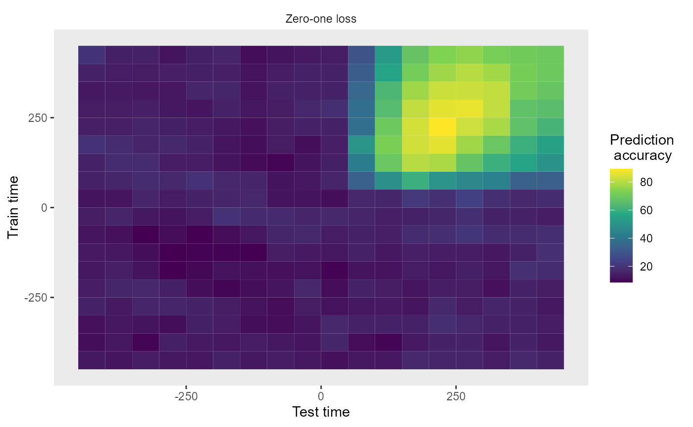
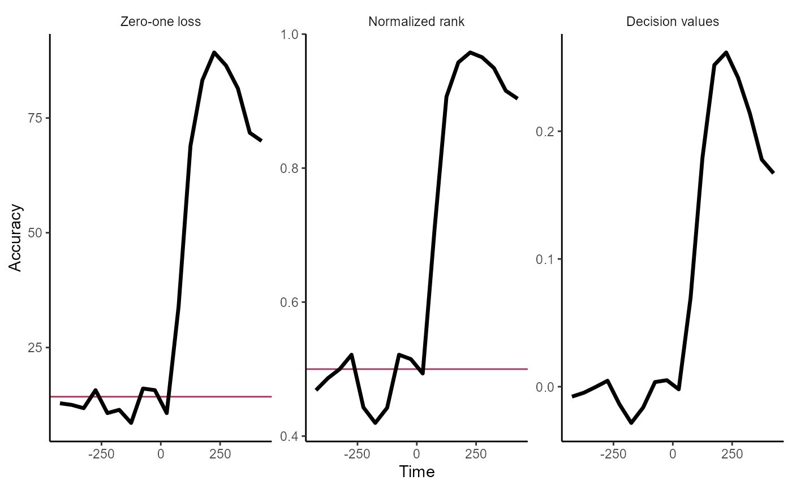
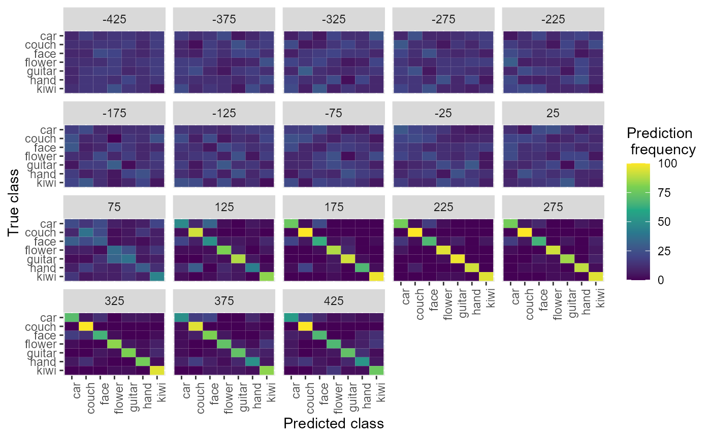
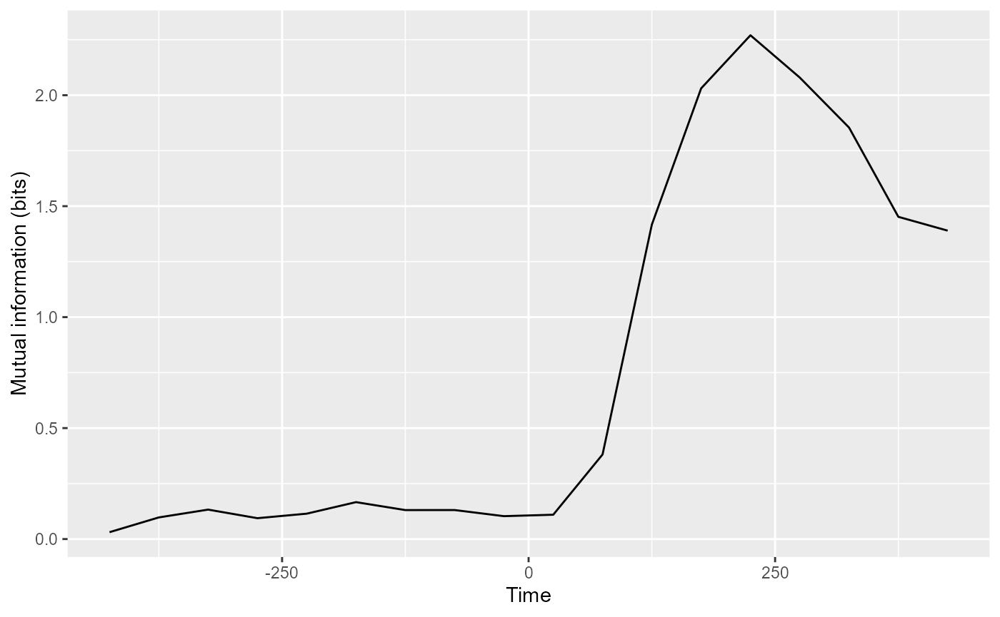
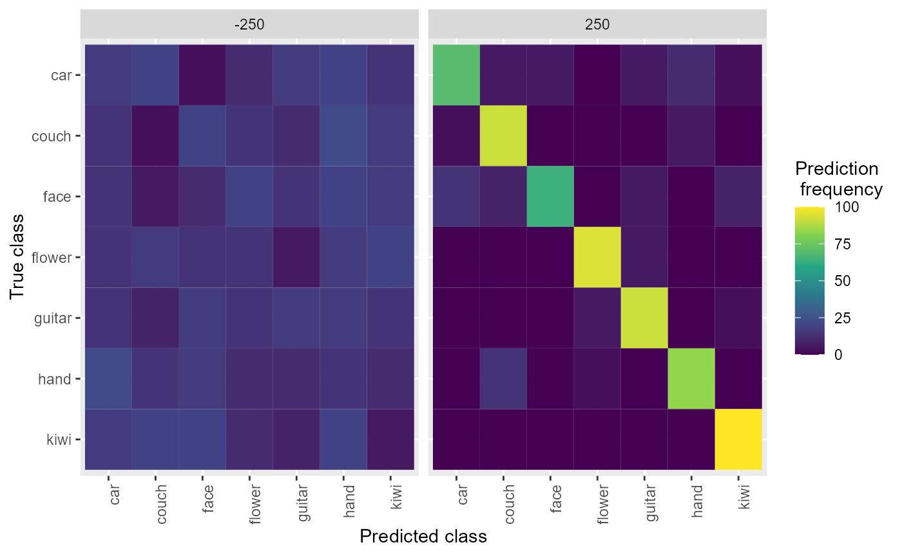

vignettes/introduction_tutorial.Rmd
introduction_tutorial.RmdThe following tutorial gives a basic introduction to the data formats used by NeuroDecodeR (NDR) and shows how to run a simple decoding analysis. The tutorial is based on a dataset collected by Ying Zhang in Bob Desimone’s lab at MIT (some of the code below uses just a small subset of this data, but a larger data set can be download from the NeuroDecodeR GitHub site).
The NeuroDecodeR package is based on the MATLAB Neural Decoding Toolbox, which you can learn more about at www.readout.info.
Neural decoding is a process in which a pattern classifier learns the relationship between neural activity and experimental conditions using a training set of data. The reliability of the relationship between the neural activity and experimental conditions is evaluated by having the classifier predict what experimental conditions were present on a second test set of data.
The NDR is built around 5 different object classes that allow users to apply neural decoding in a flexible and robust way. The four types of objects are:
Datasources (DS) which generate training and test splits of the data.
Feature preprocessors (FP) which apply preprocessing to the training and test splits.
Classifiers (CL) which learn the relationship between experimental conditions and data on the training set, and then predict experimental conditions on the test data.
Result Metrics (RM) which take the output predictions of a classifier and summarize the prediction accuracy.
Cross-validators (CV) which take the DS, FP and CL objects and run a cross-validation decoding procedure.
The NDR comes with a few implementations of each of these objects, and defines interfaces that allow one to create new objects that extend the basic functionality of the five object classes. The following tutorial explains the data formats used by the Neural Decoding Toolbox and how to run a decoding experiment using the basic versions of the four object classes.
The data used in this tutorial was collected by Ying Zhang in Bob Desimone’s lab at MIT and was used in the supplemental figures in the paper Object decoding with attention in inferior temporal cortex, PNAS, 2011. The data consists of single unit recordings from 132 neurons in inferior temporal cortex (IT). The recordings were made while a monkey viewed 7 different objects that were presented at three different locations (the monkey was also shown images that consisted of three objects shown simultaneously and performed an attention task; however, for the purposes of this tutorial, we are only going to analyze data from trials when single objects were shown). Each object was presented approximately 20 times at each of the three locations.
To start, let us load some libraries we will use in this tutorial.
In order to use the NDR, the neural data must be in a usable format. Typically, this involves putting the data in raster format and then converting it to binned format using the create_binned_data() function.
To run a decoding analysis using the NDR, you first need to have your data in a usable format. In this tutorial we will use data collected by Ying Zhang in Bob Desimone’s lab at MIT. The directory extdata/Zhang_Desimone_7objects_raster_data_rda/ contains data in raster format. Each file in this directory contains data from one neuron. To start, let us load one of these files and examine its contents.
We can also use the test_valid_raster_format() method to verify that the data is in valid raster format. If you start analyzing your own data, test_valid_raster_format() can be a useful function to make sure you have your raster data in the correct format.
raster_dir_name <- file.path(system.file("extdata", package = "NeuroDecodeR"), "Zhang_Desimone_7object_raster_data_small_rda")
file_name <- "bp1001spk_01A_raster_data.rda"
load(file.path(raster_dir_name, file_name))
test_valid_raster_format(file.path(raster_dir_name, file_name))Below, we visualize the spiking pattern for this one neuron by using the raster data’s plot() function.
plot(raster_data)
Here, the x-axis represents time in milliseconds, and the y-axis represents different trials. Each black tick mark represents a point in time when a neuron emitted an action potential.
The NDR decoding objects operate on data in binned-format. To convert data from raster-format to binned-format, we can use the function create_binned_data(), which calculates the average firing rate of neurons over specified intervals sampled with a specified frequency (i.e., a boxcar filter is used). create_binned_data() takes in four arguments:
To calculate the average firing rates in 150 ms bins sampled every 50 ms, the following commands can be used:
library(NeuroDecodeR)
binned_file_name <- create_binned_data(raster_dir_name, "ZD", 150, 50)Before beginning the decoding analysis, it is useful to know how many times each experimental condition (e.g., stimulus) was presented to each site (e.g., neuron). In particular, it is useful to know how many times the condition that has the fewest repetitions was presented. To do this, we will use the function get_num_label_repetitions() which uses data in binned-format and calculates how many trials each label level was presented.
Below, we use the plot function on the results to see how many times the labels were repeated.
binned_file_name <- system.file("extdata/ZD_150bins_50sampled.Rda", package="NeuroDecodeR")
label_rep_info <- get_num_label_repetitions(binned_file_name, "stimulus_ID")
plot(label_rep_info) 
Here, we see there are 132 neurons which have 60 repetitions of all the labels, and 6 neurons where the flower label was only presented 59 times. Thus, if we want to use all the neurons in the decoding analysis, the maximum number of cross-validation splits we could use is 59. Alternatively, we could use 60 cross-validation splits along with the 125 neurons that have 60 repetitions.
Performing a decoding analysis involves several steps:
Creating a datasource (DS) object that generates training and test splits of the data.
Optionally creating feature-preprocessor (FP) objects that learn parameters from the training data, and preprocess the training and test data.
Creating a classifier (CL) object that learns the relationship between the training data and training labels, and then evaluates the strength of this relationship on the test data.
Creating result metric (RM) objects that aggregate the predictions to create result summaries.
Running a cross-validator object that using the datasource (DS), the feature-preprocessor (FP) and the classifier (CL) objects to do a cross-validation procedure that estimates the decoding accuracy.
Below, we describe how to create and run these objects on the Zhang-Desimone dataset.
A datasource object is used by the cross-validator to generate training and test splits of the data. Below we create a ds_basic() object that takes binned-format data, name of the label variables to be decoded, and a scalar that specifies how many cross-validation splits to use. The default behavior of this datasource is to create test splits that have one example of each object in them and num_cv_splits - 1 examples of each object in the training set.
As calculated above, all 132 neurons have 59 repetitions of each stimulus, and 125 neurons have 60 repetitions of each stimulus. Thus, we can use up to 59 cross-validation splits using all neurons, or we could set the datasource to use only a subset of neurons and use 60 cross-validation splits. For the purpose of this tutorial, we will use all the neurons and only 20 cross-validation splits so the code runs a little faster. The ds_basic() datasource object also has many more properties that can be set, including specifying certain label levels or neurons to use.
binned_file_name <- system.file(file.path("extdata", "ZD_150bins_50sampled.Rda"),
package="NeuroDecodeR")
variable_to_decode <- "stimulus_ID"
num_cv_splits <- 20
ds <- ds_basic(binned_file_name, variable_to_decode, num_cv_splits)Feature preprocessors use the training set to learn particular parameters about the data, and then apply preprocessing to the training and test sets using these parameters. Below, we will create a fp_zscore() preprocessor that zscore normalizes the data so that each neuron’s activity has approximately zero mean and a standard deviation of 1 over all trials. This feature-preprocessor is useful so that neurons with high firing rates do not end up contributing more to the decoding results than neurons with lower firing rates when a cl_max_correlation() classifier is used.
Classifiers take a training set of data and learn the relationship between the neural responses and the experimental conditions (label levels) that were present on particular trials. The classifier is then used to make predictions about what experimental conditions are present on trials from a different test set of neural data. Below, we create a cl_max_correlation() classifier which learns prototypes of each class k that consists of the mean of all training data from class k. The predicted class for a new test point x is the class that has the maximum correlation coefficient value between the x and each class prototype.
cl <- cl_max_correlation()Result metrics take the predictions made by a classifier, as well as the ground truth (i.e., the actual label level values for what happened on each trial) and aggregate these predictions to give a measure of the classifier’s performance.
Below, we create two result metrics. The first result metric returns basic measures of decoding accuracy such as the proportion of predictions that were correct (zero-one-loss). The second result metric creates a confusion matrix showing the pattern of prediction mistakes that were made. Result metrics must also be put into a list so multiple result metrics can be used in an analysis.
rms <- list(rm_main_results(), rm_confusion_matrix())Cross-validator objects take a datasource, a classifier, result metrics and optionally feature-preprocessor objects, and run a decoding procedure by generating training and test data from the datasource, preprocessing this data with the feature-preprocessors, training and testing the classifier on the resulting data, and aggregating the results with the result metrics. This procedure is run in two nested loops. The inner ‘cross-validation’ loop runs a cross-validation procedure where the classifier is trained and tested on different divisions of the data. The outer, ‘resample’ loop generates new splits (and potentially pseudo-populations) of data, which are then run in a cross-validation procedure by the inner loop. The number of resample runs is a parameter for this analysis as well, which we have set to 2 to make the procedure run quicker, although in general more resample runs will yield smoother results (the default value is 50). Below, we create a cv_standard() object that runs this decoding procedure.
cv <- cv_standard(datasource = ds,
classifier = cl,
feature_preprocessors = fps,
result_metrics = rms,
num_resample_runs = 2)To run the decoding procedure, we call the cross-validator’s run_cv_decoding method, and the results are stored in an object DECODING_RESULTS.
DECODING_RESULTS <- run_decoding(cv)##
|
| | 0%
|
|=================================== | 50%
|
|======================================================================| 100%The DECODING_RESULTS object created is a list that contains our result metrics, calculated by aggregating the results over all the cross-validation splits. We can now use the result metrics plot functions to visualize these aggregated results.
The rm_main_results() plot function allows one to plot temporal cross decoding results, where we are training the classifier at one time and testing the classifier at a second time. This can be displayed by running the code below:
plot(DECODING_RESULTS$rm_main_results)
We can also create simpler line plots by setting the plot_type = 'line'. Additionally, we can plot all three types of results that that rm_main_results object saves using the type = 'all' argument. Below, we see the results by setting both these arguments.
plot(DECODING_RESULTS$rm_main_results, result_type = 'all', plot_type = 'line')
We can also plot the confusion matrices aggregated from the rm_confusion_matrix object, which shows the pattern of classification mistakes at different points in time.
plot(DECODING_RESULTS$rm_confusion_matrix)
The rm_confusion_matrix() object also has a function plot_MI() which calculates mutual information from the confusion matrix and plots this as a function of time or as a TCT plot.
plot(DECODING_RESULTS$rm_confusion_matrix, result_type = "mutual_information")
Finally, the NDR has a “log” function that helps you save and manage your results. Below, we show how to use the log_save_results() function which takes a DECODING_RESULTS object and the name of a directory. This function saves the results to the specified directory and logs the parameters used in the analysis so that they can later be retrieved. For more information, see the tutorial on saving and managing results.
results_dir_name <- file.path("results", "")
dir.create(results_dir_name)## Warning in dir.create(results_dir_name): 'results' already exists
log_save_results(DECODING_RESULTS, results_dir_name)It is also possible to run a decoding analysis by string together NDR objects using the magrittr pipe operator. One can do this with the following steps:
The code below gives and example of how this can be done.
basedir_file_name <- system.file(file.path("extdata", "ZD_500bins_500sampled.Rda"),
package="NeuroDecodeR")
DECODING_RESULTS <- basedir_file_name %>%
ds_basic('stimulus_ID', 6, num_label_repeats_per_cv_split = 3) %>%
cl_max_correlation() %>%
fp_zscore() %>%
rm_main_results() %>%
rm_confusion_matrix() %>%
cv_standard(num_resample_runs = 3) %>%
run_decoding()##
|
| | 0%
|
|======================= | 33%
|
|=============================================== | 67%
|
|======================================================================| 100%
plot(DECODING_RESULTS$rm_confusion_matrix)